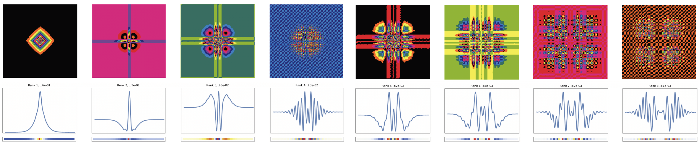
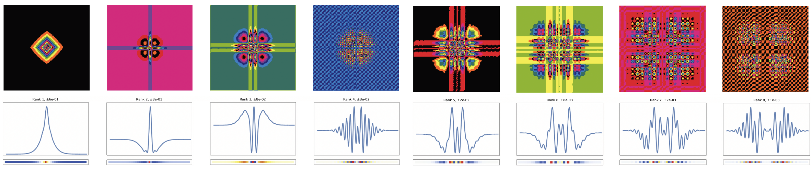

Welcome to Compact Poisson Filters documentation
 

{kind=link}
Compact Poisson filters are powerful alternatives to iterative linear methods to solve Poisson’s equation \(\nabla^{2} \phi = f\), particularly for real-time applications, where interactivity is of high importance.
Poisson filter-based method is a one-shot, convolutional linear solver that balances between the strengths of spectral and iterative methods with a parallel implementation on GPU. Our solver precludes the need for careful preconditioning, scales favorably with the size of the problem, handles Neumann boundary conditions, and is a drop-in replacement with controllable error tolerance for existing solvers in high-performance settings.
While the main application presented in this work is enhancing the runtime performance of Eulerian fluids simulation, Poisson filters have the potential to be used in other domains that require a fast solution to Poisson’s equation, such as image processing, cloth simulation, Newtonian gravity, and electrostatics.
Next: How to run the demos
Paper
“Compact Poisson Filters for Fast Fluid Simulation”, ACM SIGGRAPH 2022 Conference.
You can also find the paper and its supplements in docs/paper/.
How To Cite
@inproceedings{10.1145/3528233.3530737,
author = {Rabbani, Amir Hossein and Guertin, Jean-Philippe and Rioux-Lavoie, Damien and Schoentgen, Arnaud and Tong, Kaitai and Sirois-Vigneux, Alexandre and Nowrouzezahrai, Derek},
title = {Compact Poisson Filters for Fast Fluid Simulation},
year = {2022},
isbn = {9781450393379},
publisher = {Association for Computing Machinery},
address = {New York, NY, USA},
url = {https://doi.org/10.1145/3528233.3530737},
doi = {10.1145/3528233.3530737},
abstract = {Poisson equations appear in many graphics settings including, but not limited to, physics-based fluid simulation. Numerical solvers for such problems strike context-specific memory, performance, stability and accuracy trade-offs. We propose a new Poisson filter-based solver that balances between the strengths of spectral and iterative methods. We derive universal Poisson kernels for forward and inverse Poisson problems, leveraging careful adaptive filter truncation to localize their extent, all while maintaining stability and accuracy. Iterative composition of our compact filters improves solver iteration time by orders-of-magnitude compared to optimized linear methods. While motivated by spectral formulations, we overcome important limitations of spectral methods while retaining many of their desirable properties. We focus on the application of our method to high-performance and high-fidelity fluid simulation, but we also demonstrate its broader applicability. We release our source code at https://github.com/Ubisoft-LaForge/CompactPoissonFilters .},
booktitle = {ACM SIGGRAPH 2022 Conference Proceedings},
articleno = {35},
numpages = {9},
keywords = {iterative methods, reduced modeling},
location = {Vancouver, BC, Canada},
series = {SIGGRAPH '22}
}
License
See License